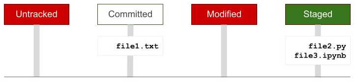

Gestión de versiones
Introducción a Python
Depto. de Recursos Naturales, IGEF-UNAM
2024-09-30
Motivación.
- Git proporciona una mejor manera de gestionar los archivos:
- es un sistema de control de versiones de software o de documentos en general,
- monitorea los archivos de un proyecto,
- los archivos conforman un repositorio de información,
- es abierto y gratuito.
{kind=link}
Git gestiona los documentos de un repositorio como un sistema de archivos miniatura.
Se almacenan los estados de los archivos en ciertos instantes (snapshots), cada vez que se hace una confirmación (commit).
{kind=link}
Ejemplo.
- Considera el siguiente directorio de archivos:
| Proyecto | |
|---|---|
| file1.txt | |
| file2.py | |
| file3.ipynb | |
Inicialización.
| Proyecto | |
|---|---|
| file1.txt | Untracked |
| file2.py | Untracked |
| file3.ipynb | Untracked |
| .git/ | Info del repo |
Preparar.
| Proyecto | |
|---|---|
| file1.txt | Staged |
| file2.py | Untracked |
| file3.ipynb | Untracked |
| .git/ | Info del repo |

Confirmar los cambios.
| Proyecto | |
|---|---|
| file1.txt | Committed |
| file2.py | Untracked |
| file3.ipynb | Untracked |
| .git/ | Info del repo |
Modificaciones.
| Proyecto | |
|---|---|
| file1.txt | Modified |
| file2.py | Untracked |
| file3.ipynb | Untracked |
| .git/ | Info del repo |
Acciones en grupo.
| Proyecto | |
|---|---|
| file1.txt | Committed |
| file2.py | Untracked |
| file3.ipynb | Untracked |
| .git/ | Info del repo |
- Preparar todos los archivos del directorio:
| Proyecto | |
|---|---|
| file1.txt | Committed |
| file2.py | Staged |
| file3.ipynb | Staged |
| .git/ | Info del repo |

Estado de los archivos.
- Modificado (modified). Se ha modificado el archivo pero este cambio aún no ha sido confirmado en la base de datos.
- Preparado (staged). El archivo, en su versión actual, se ha marcado como modificado para que se agregue a la base de datos en la próxima confirmación.
- Confirmado (committed). El archivo se ha almacenado en la base de datos local de manera segura.
¡Manos a la obra!
Abrir una terminal.
{kind=link}
{kind=link}
Configuración inicial.
Importante
Los comandos que siguen se deben teclear en una Terminal de Jupyter Lab.
- Configuración del nombre de usuario:
- Configuración del correo electrónico:
- Verificar el resultado:
user.name=luiggix
user.email=luiggix@gmail.com- Obtener ayuda:
usage: git config [<options>]
Config file location
--global use global config file
--system use system config file
--local use repository config file
--worktree use per-worktree config file
...
Crear un repo1 local.
- Crear un directorio para almacenar los archivos con el siguiente comando:
- Cambiarse al nuevo directorio:
- Inicializar el repositorio:
hint: Using 'master' as the name for the initial branch. This default branch name
hint: is subject to change. To configure the initial branch name to use in all
hint: of your new repositories, which will suppress this warning, call:
hint:
hint: git config --global init.defaultBranch <name>
hint:
hint: Names commonly chosen instead of 'master' are 'main', 'trunk' and
hint: 'development'. The just-created branch can be renamed via this command:
hint:
hint: git branch -m <name>Observación
El comando git init genera un repositorio local vacío, creando un directorio dentro de la carpeta proyecto con el nombre .git en donde pone toda la información del repositorio para darle seguimiento a las diferentes versiones de los archivos.
Importante
La salida del comando git init nos da una recomendación (hint) para cambiar el nombre de la rama principal del repositorio. Por ahora no se hará ese cambio; lo haremos más adelante cuando se sincronice el repositorio con GitHub.
- Cómo debería quedar:
{kind=link}
- Listar los archivos del directorio:
total 0
drwxr-xr-x 3 jovyan users 26 Dec 22 00:27 .
drwxr-xr-x 3 jovyan users 27 Dec 22 00:27 ..
drwxr-xr-x 7 jovyan users 155 Dec 22 00:27 .gitRevisar el estado del repo.
- Checar el estado actual del repositorio:
On branch main
No commits yet
nothing to commit (create/copy files and use "git add" to track)Observación
Los mensajes que proporciona el comando anterior nos dicen lo siguiente:
- primero se indica en qué rama del proyecto nos encontramos (On branch main);
- después se dice que no se ha realizado ninguna confirmación (No commits yet), es decir el proyecto está vacío actualmente;
- finalmente agrega que no hay nada que confirmar (nothing to commit) y nos da una sugerencia, entre paréntesis, para agregar archivos al proyecto.
- Casi siempre Git nos va a dar recomendaciones que estarán entre paréntesis.
Crear un archivo.
{kind=link}
{kind=link}
{kind=link}
- Texto del archivo.
- Guardar el archivo (
Ctrl+S) con el nombre:README.md.
{kind=link}
- Checar el estado del repositorio.
total 12
drwxr-xr-x 4 jovyan users 99 Sep 16 02:25 .
drwxrwxrwx 24 root root 4096 Sep 16 02:14 ..
drwxr-xr-x 7 jovyan users 155 Sep 16 02:19 .git
drwxr-xr-x 2 jovyan users 77 Sep 16 02:24 .ipynb_checkpoints
-rw-r--r-- 1 jovyan users 100 Sep 16 02:18 README.mdOn branch master
No commits yet
Untracked files:
(use "git add <file>..." to include in what will be committed)
.ipynb_checkpoints/
Readme.md
nothing added to commit but untracked files present (use "git add" to track)- Cómo debería quedar:
{kind=link}
Observación
Git identifica a los nuevos elementos como Untracked files. El archivo README.md contiene información que puede cambiar en el futuro y es necesario monitorearlo. El directorio .ipynb_checkpoints/ contiene el último estado de las notebooks y no es necesario monitorearlo.
Ignorar archivos.
- Vamos a ignorar el directorio
.ipynb_checkpoints/. - Creamos otro archivo de texto con el siguiente contenido:
- Siguiendo los mismos pasos que antes, deberías obtener lo siguiente:
{kind=link}
Guardar el archivo con el nombre que tiene (
untitled.txt).La lista de archivos debe ser la siguiente:
total 12
drwxr-xr-x 4 jovyan users 101 Sep 16 02:24 .
drwxrwxrwx 24 root root 4096 Sep 16 02:14 ..
drwxr-xr-x 7 jovyan users 155 Sep 16 02:19 .git
drwxr-xr-x 2 jovyan users 77 Sep 16 02:24 .ipynb_checkpoints
-rw-r--r-- 1 jovyan users 100 Sep 16 02:18 README.md
-rw-r--r-- 1 jovyan users 37 Sep 16 02:24 untitled.txt- Cambiar el nombre de
untitled.txta.gitignorecon el siguiente comando:
- Ahora la lista de archivos debe ser:
total 12
drwxr-xr-x 4 jovyan users 99 Sep 16 02:25 .
drwxrwxrwx 24 root root 4096 Sep 16 02:14 ..
drwxr-xr-x 7 jovyan users 155 Sep 16 02:19 .git
-rw-r--r-- 1 jovyan users 37 Sep 16 02:24 .gitignore
drwxr-xr-x 2 jovyan users 77 Sep 16 02:24 .ipynb_checkpoints
-rw-r--r-- 1 jovyan users 100 Sep 16 02:18 README.md- Checamos el estado del repositorio:
On branch master
No commits yet
Untracked files:
(use "git add <file>..." to include in what will be committed)
.gitignore
README.md
nothing added to commit but untracked files present (use "git add" to track)Observación
Observa que ya no se está monitoreando el directorio .ipynb_checkpoints/. En cambio, ahora Git detecta el archivo .gitignore el cual es importante para el repositorio.
- Cómo debería quedar:
{kind=link}
Preparando los archivos.
- Vamos a pasar al archivo
README.mdal área de espera (staged) con el siguiente comando:
- Checamos el estado del repositorio:
On branch master
No commits yet
Changes to be committed:
(use "git rm --cached <file>..." to unstage)
new file: README.md
Untracked files:
(use "git add <file>..." to include in what will be committed)
.gitignoreObservación
Git nos indica que el archivo README.md está listo para ser confirmado en la siguiente versión del proyecto (Changes to be commited). Mientras que el archivo .gitignore aún no es monitoreado (Untracked files).
- Hacemos lo mismo con el archivo
.gitignore:
On branch master
No commits yet
Changes to be committed:
(use "git rm --cached <file>..." to unstage)
new file: .gitignore
new file: README.mdAhora ambos archivos están listos para ser confirmados.
Recomendación
Es común que el número de archivos que se deben enviar al área de espera sean muchos y estén en diferentes subdirectorios. En esos casos no es conveniente hacer el git add uno por uno. Para preparar todos los archivos en un solo paso se utiliza el comando:
Este comando debe ejecutarse desde el directorio principal del repositorio.
Confirmar los cambios.
- Ya que se tienen los archivos
README.mdy.gitignorepreparados, los confirmamos usando el siguiente comando:
git commit -m "Agregamos el README.md y el .gitignore; en este último indicamos no monitorear el directorio .ipynb_checkpoints/" [master (root-commit) f31e453] Agregamos el README.md y el .gitignore; en este último indicamos no monitorear el directorio .ipynb_checkpoints/
2 files changed, 6 insertions(+)
create mode 100644 .gitignore
create mode 100644 README.- Checamos el estado del repositorio:
On branch master
nothing to commit, working tree cleanEn resumen.
La primera vez.
- Crear el directorio del
proyecto.
- Cambiarse al directorio
proyecto.
- Inicializar el repositorio.
Posteriormente.
- Cambiarse al directorio
proyecto.
Crear y/o modificar archivos del proyecto.
Revisar el estado del repositorio.
- Preparar los archivos (enviarlos al área de espera staged).
- Confirmar los cambios (commit).
Gestión de versiones [Introducción a Python]